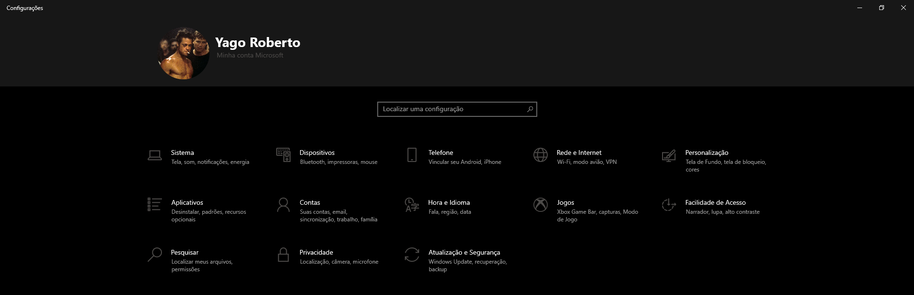
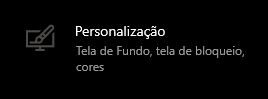
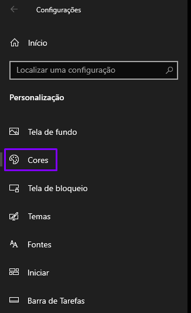
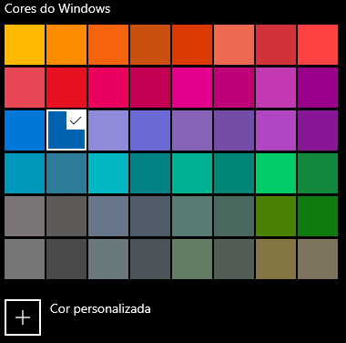
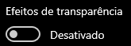
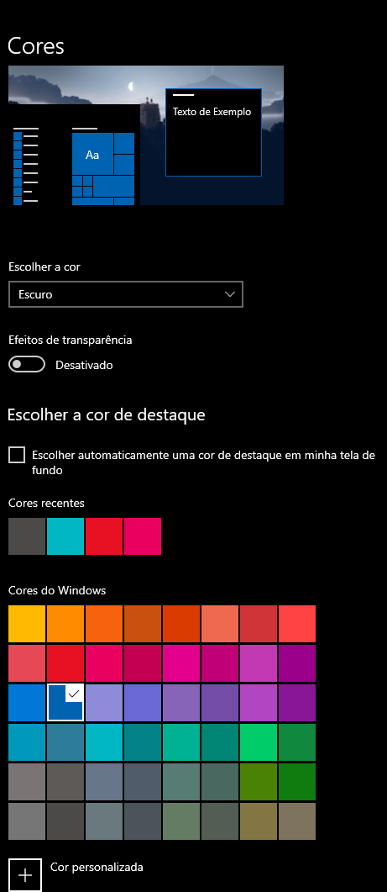
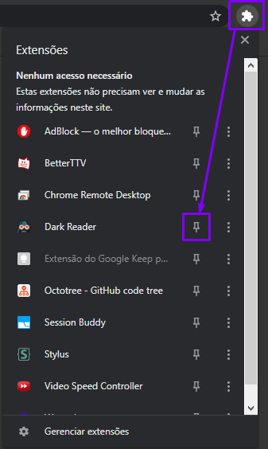
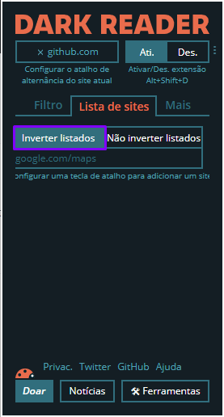
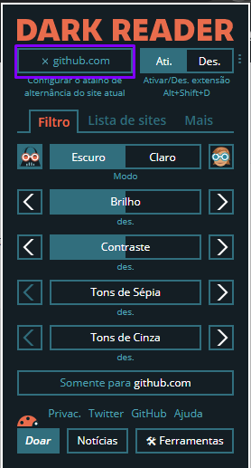

Dicas para personalização do Windows 10
Neste tópico iremos aprender a como colocar o Windows 10 no tema escuro com os seguintes passos:
- Abrir as configurações do Windows. Pode ser utilizado o atalho
Win + I.
Após isso provavelmente irá aparecer uma tela semelhante a essa:

- Após isso vá em “Personalização”

- Acesse o menu “Cores” que se localiza no canto esquerdo

- Agora é só deixar do seu jeitinho
- Primeiro altere a cor do sistema:
- Altere a cor da barra de tarefas para combinar mais contigo (talvez um azulzinho?):

- Dica, desabilite a opção de deixar os efeitos de transparência, isso economiza recursos e
particularmente eu acho mais bonito:

- No final é para ficar mais ou menos assim:

Deixar o Chrome em Black Mode
Agora nós vamos deixar o Chrome mais gótico, igual a você.
- Primeiro nós vamos precisar realizar o download do tema Just
Black
- Agora é só clicar no botão “Usar no Chrome”
- Pronto, agora o seu Chrome está com o tema escuro ativado
Bonus
Existe uma extensão que deixa todas as páginas com o tema escuro, vamos baixar ela agora, mas se não quiser
não precisa.
- Acesse o link da extensão Dark
Reader, e clique no botão “Usar no chrome”, mesmo procedimento do passo anterior.
- Provavelmente ela aparecer como uma extensão oculta, para deixar ela visível e mais fácil de editar,
vamos fixar ela dessa forma:

Agora é para ficar mais ou menos desse jeito:
- Por default ele sempre aplica o tema na página e isso não é tão legal. Pois o Dark Reader funciona de
uma forma simulada, ou seja, ele simula o tema escuro em uma página web, e por vezes ele não simula tão
bem. Portanto vamos desativar essa funcionalidade e só aplicar nos sites que nós realmente queremos o
tema escuro. Dito isso clique no ícone da extensão e vá em “Lista de sites”, após isso clique no botão
“Inverter listados”, dessa forma:

- Agora para aplicar nos sites que você quer usar é só clicar novamente no ícone da extensão e habilitar
clicando nesse botão:

Prontinho, qualquer dúvida é só conversar comigo 🖤